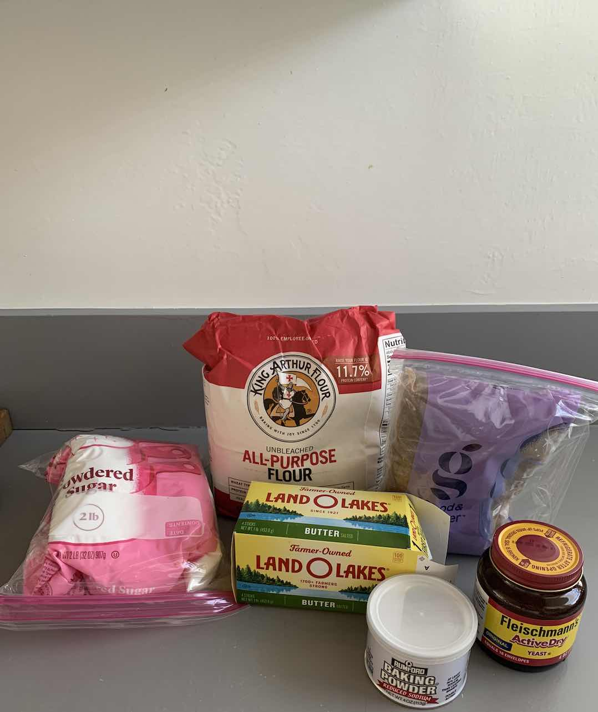
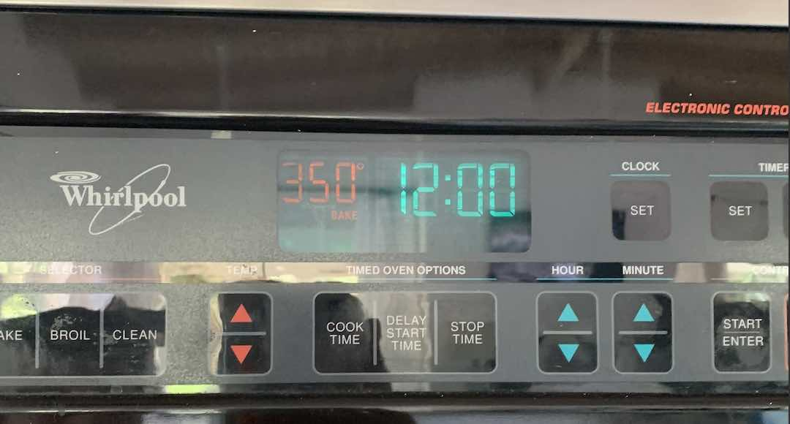

Ingredients
- All purpose flower
- Powdered sugar
- Brown sugar
- Yeast
- Baking powder
- Butter
- 2 eggs
Recipe
- Set oven to 350F
 - Mix 2 eggs with melted butter until smooth.
- Slowly add warm milk while mixing butter and eggs.
- Mix flour, salt, powdered sugar, and yeast.
- Add yeast to wet ingredients.
- Slowly add flour to wet ingredients.
- Knead dough on countertop until perfect consistency.
- Place dough in a bowl and cover the bowl with clear wrap, place in the oven while off and let sit for 2 hours so that the dough can rise.
- Roll dough out and cut even cinnamon rolls.

- Place in a buttered pan, bake for 14 minutes.

Final Result
Your cinnamon rolls should look like this. Enjoy with a cold glass of milk with someone you love.